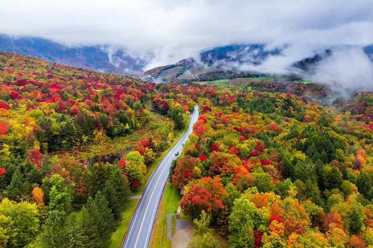
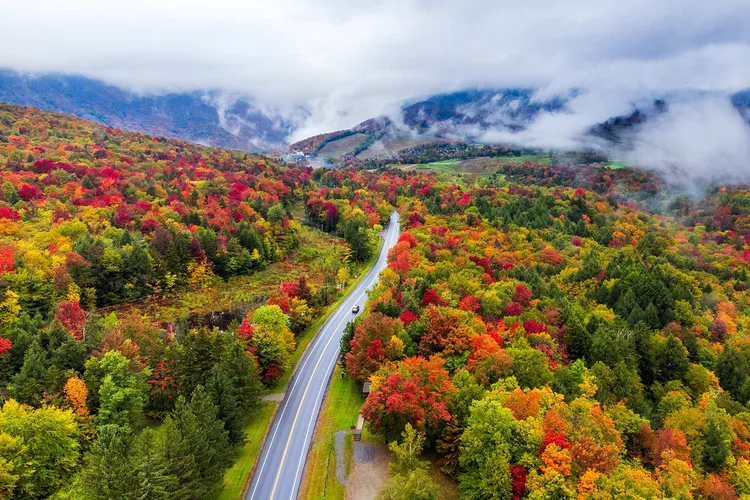
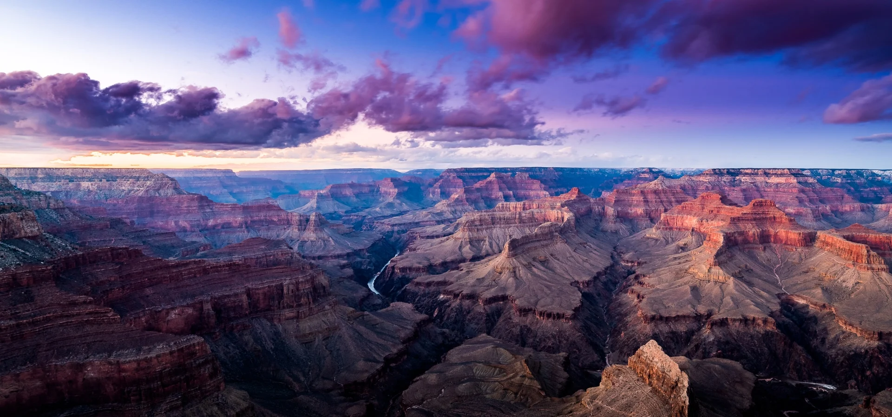

Yellowstone
Geographical Location: North America
Yellowstone is the first national park in the United States. It covers over 2.2 million acres, and provides an opportunity to see wildlife and explore geothermal areas. In fact, Yellowstone contains about half the world's active geysers.
These unique opportunities also bring out a lot of bad decisions among the tourists. Every year visitors injure themselves or the wildlife by getting close to the animals. You can see examples of people making bad decisions by visiting Yellowstone National Park: Invasion of the Idiots, Tourons of Yellowstone, or Cowboy State Daily.
Photo Gallery


Vermont

Geographical Location: North America
Vermont (/vər'mɒnt/ i)[6] is a landlocked New England state in the Northeastern United States. It is bordered by the states of Massachusetts to the south, New Hampshire to the east, New York to the west, and the Canadian province of Quebec to the north. As of the 2020 U.S. census, the state had a population of 643,503,[7] ranking it the second least populated U.S. state. It is the nation's sixth smallest state in area. The state's capital of Montpelier is the least populous U.S. state capital. No other U.S. state has a most populous city with fewer residents than Burlington.
Photo Gallery
 

Iceland

Geographical Location: Europe
Iceland is home to three UNESCO-designated world heritage sites. These carefully selected places are areas with legal protection for having such cultural, historical, or scientific significance that they provide outstanding value to humanity.
Photo Gallery

Niagara Falls

Geographical Location: North America
Niagara Falls is located on the border between Canada and the United States. Connecting Lake Erie and Lake Ontario, Niagara Falls has the highest flow rate of any waterfall in North America.
Niagara Falls draws in thousands of visitors every year, and for good reason. As such, there are numerous things that you can see while you visit the falls, and it is very easy to make a full trip out of seeing this wonderful sight.
Photo Gallery


Boulder Colorado

Geographical Location: Locky Mountains
Boulder is a city at the foothills of the Rocky Mountains, in northern Colorado. To the west, the trail-lined Flatirons are craggy rock formations overlooking the city. Downtown’s pedestrian Pearl Street Mall includes art galleries, cafes, restaurants and boutiques. The University of Colorado Boulder campus is home to the Fiske Planetarium and the Museum of Natural History, with zoology and anthropology exhibits.
Photo Gallery


Grand Canyon
Geographical Location: Arizona
Grand Canyon National Park, in Arizona, is home to much of the immense Grand Canyon, with its layered bands of red rock revealing millions of years of geological history. Viewpoints include Mather Point, Yavapai Observation Station and architect Mary Colter’s Lookout Studio and her Desert View Watchtower. Lipan Point, with wide views of the canyon and Colorado River, is a popular, especially at sunrise and sunset.
Photo Gallery